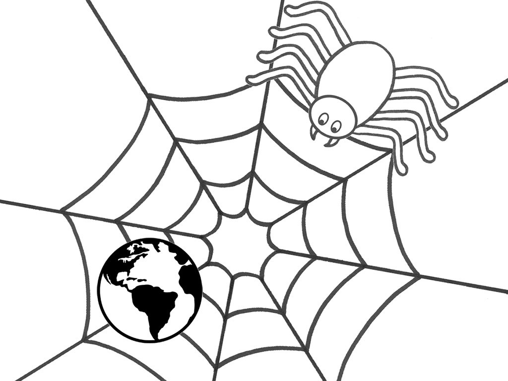

Github is a GIS Repository hosting service used by millions to manage projects.
#github

What can I host on Github?
You will be able to host static files such as: .html, .js, .json, .geojson , .csv, image files etc.
What this will allow you to do is run a site such as this and host maps such as this!
You can edit geojson files directly from geojson.io and then see the changes in maps such as this!
Things that are needed to use Github:
A computer machine
the internet
a github account
some github Software
a fine text editor
How our team could use Github:
*Things GoogleDrive isn't good at
*Issue tracking/ work requests
*Webmap development
*documentation
*Collaborating w/ partners outside DOI